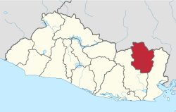

Joateca es un municipio del departamento de Morazán en El Salvador. Limita al norte y al este con la República de Honduras; al sur con Corinto y Cacaopera; al oeste con Meanguera y Arambala.
La población de este lugar es de origen Lenca. En 1890 fue erigido como pueblo, título que perdió en 1893, pero que fue recuperado el año siguiente. En un inicio perteneció al distrito de El Rosario, y posteriormente pasó a formar parte del distrito de Jocoaitique.
El municipio cubre un área de 66,11 km² y la cabecera tiene una altitud de 820 msnm. El topónimo lenca Joateca significa «Valle de los ocotes» o «Valle de las orejas». Las fiestas patronales se celebran en el mes de junio en honor a San Antonio de Padua. El poblado forma parte de la denominada «Ruta de la Paz», recorrido turístico del departamento.
